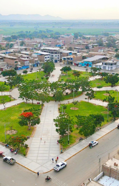
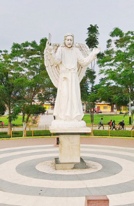

La Municipalidad de Pacanguilla es una entidad de gobierno local ubicada en el distrito de Pacanga, provincia de Chepén, La Libertad. Administra servicios básicos como agua, limpieza, seguridad y desarrollo urbano para la población del centro poblado de Pacanguilla. Su sede se encuentra frente a la Plaza de Armas y su principal actividad es la gestión pública local.
La Municipalidad del Centro Poblado de Pacanguilla, ubicada en el distrito de Pacanga, provincia de Chepén, en la región de La Libertad, se fundó el 5 de diciembre de 1940. A lo largo de su historia, esta entidad se ha dedicado a promover el desarrollo económico y social de la comunidad, gestionando los recursos locales para implementar proyectos que contribuyan al bienestar de la población (4). La municipalidad está registrada bajo el RUC 20178862155 y se encuentra activa, con su sede administrativa en la Calle Mariano Melgar Nro. 685, frente a la Plaza de Armas de Pacanguilla (5). Desde su fundación, la institución ha tenido como misión principal administrar los ingresos locales y desarrollar labores en beneficio de la comunidad. Con el tiempo, ha ampliado sus actividades para abarcar áreas de gestión urbana, servicios públicos, y apoyo social, adaptándose a las necesidades de crecimiento de la población. La Municipalidad del Centro Poblado de Pacanguilla ha experimentado un crecimiento sostenido, particularmente en la última década, gracias a la modernización de sus servicios y la implementación de proyectos de infraestructura que han mejorado la calidad de vida de los habitantes. A futuro, la municipalidad tiene como visión convertirse en un referente de gestión local eficiente, promoviendo la transparencia y la participación ciudadana. Para lograrlo, se enfocan en mejorar la infraestructura vial, expandir los servicios educativos y de salud, así como promover el desarrollo económico mediante la creación de nuevas oportunidades de empleo y el apoyo a las actividades comerciales y agropecuarias locales. La visión de la municipalidad es ser una entidad municipal modelo en la región, reconocida por su gestión eficiente y por el desarrollo sostenible de la comunidad, así mismo, su misión es administrar los recursos de manera transparente y eficiente para promover el bienestar social, económico y cultural de la comunidad, garantizando la ejecución de proyectos que impacten positivamente en la calidad de vida de los ciudadanos. Si bien la municipalidad no cuenta con "clientes" en el sentido comercial, sus principales beneficiarios son los habitantes del Centro Poblado de Pacanguilla y las comunidades aledañas. A través de sus actividades, la municipalidad atiende las necesidades de la población local y trabaja en conjunto con otros actores locales y regionales para promover el desarrollo integral del distrito de Pacanga..
Aquí se muestra el estado de las vacantes laborales y cómo postularse.